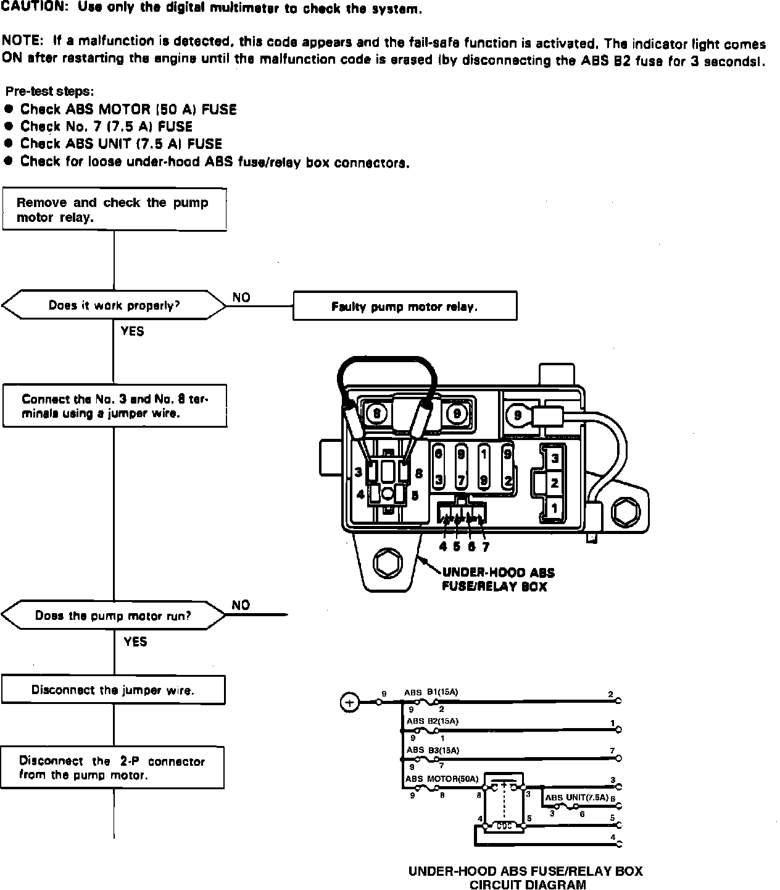
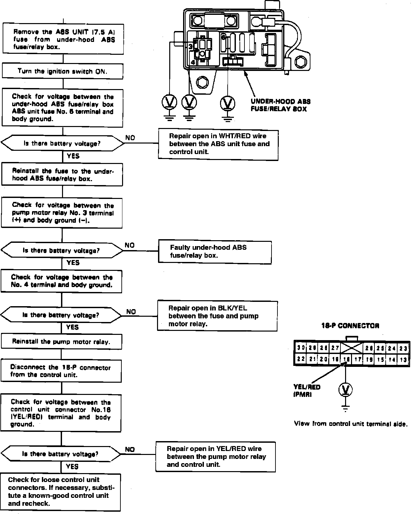
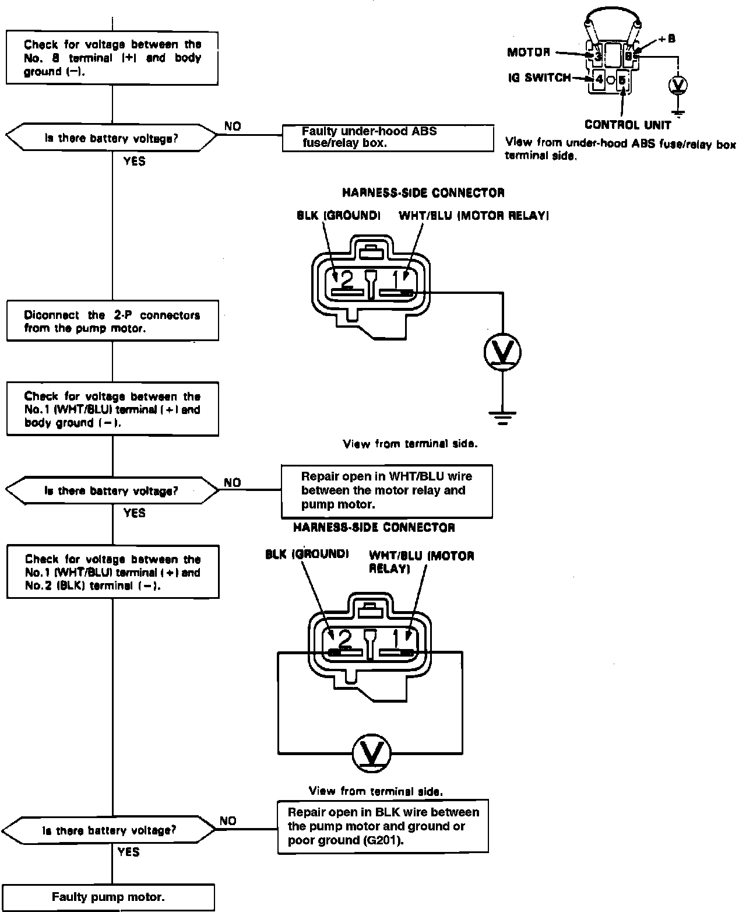

DTC 1-2
Fig. 52 Trouble Code 1-2, Pump Motor Circuit Problem (Part 1 Of 3):

Fig. 52 Trouble Code 1-2, Pump Motor Circuit Problem (Part 2 Of 3):

Fig. 52 Trouble Code 1-2, Pump Motor Circuit Problem (Part 3 Of 3):

Refer to Fig. 52 for system diagnostic charts.